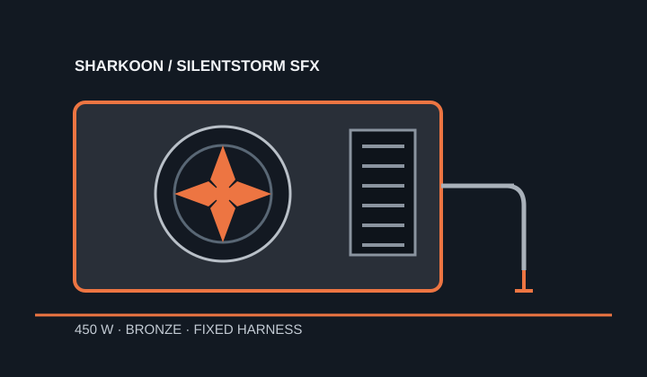

[ POWER CONVERSION // IDENTIFIED MODEL ]
Sharkoon SilentStorm SFX Bronze 450W
450 W version of Sharkoon's SilentStorm SFX Bronze line. Distinguish it from the separate 350 W version by label and rating table.

HIGH-VOLTAGE SAFETY: Do not open or probe a PSU; capacitors may remain charged.
Verified model specifications
| Model / rated output | Sharkoon SilentStorm SFX Bronze, 450 W version. |
|---|---|
| Form factor / dimensions | SFX; 125 × 100 × 63 mm as ordered in the Sharkoon product material (length × width × height). Check the actual case clearance. |
| DC output rails | +3.3 V: 21 A; +5 V: 22 A; combined +3.3 V/+5 V: 120 W; +12 V: 36 A / 432 W; −12 V: 0.5 A; +5 VSB: 3 A. |
| Efficiency claim | 80 PLUS Bronze, stated by Sharkoon for this product line. |
| Cable-end connector counts | Fixed cables: ATX 20+4-pin ×1; CPU 4+4-pin ×1; PCIe 6-pin ×1 and 6+2-pin ×1; SATA ×3; IDE/Molex ×2; floppy ×1. |
| Revision and cable cautions | Use the 450 W model column in the manufacturer manual, not the 350 W variant. Fixed harness; no detachable PSU-side modular cable set. Do not splice or adapt fixed leads. |
Compatibility & safe installation
- Confirm the SFX mounting envelope, 125 mm length clearance, intake access and fixed lead reach in the target case.
- Compare the GPU's required plugs with the separate 6-pin and 6+2-pin leads and check the 432 W +12 V ceiling; do not treat two plugs as proof of a supported GPU load.
- Use the model-specific 450 W rail table; the adjacent 350 W variant has a different rating.
- Never open, repair or electrically probe the unit.
Manufacturer sources
- Sharkoon SilentStorm SFX Bronze product pageManufacturer product identity, form factor and dimensions.
- Sharkoon SilentStorm SFX Bronze manualManufacturer 350/450 W tables, rail outputs and fixed connector inventory.